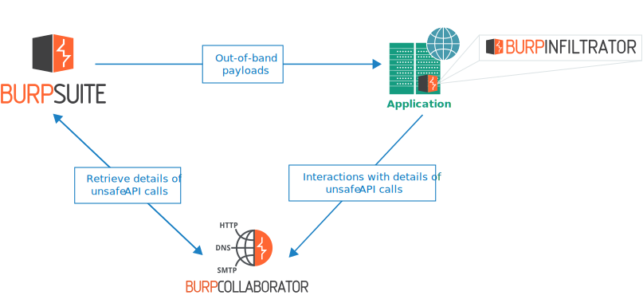
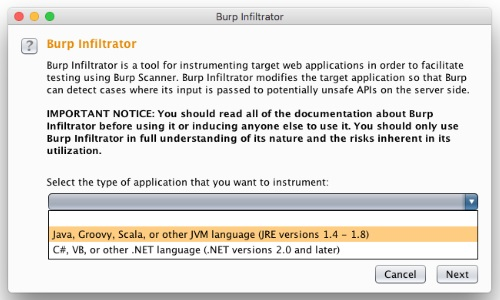
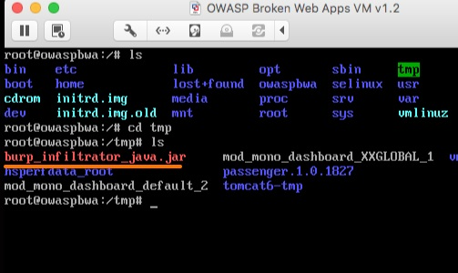
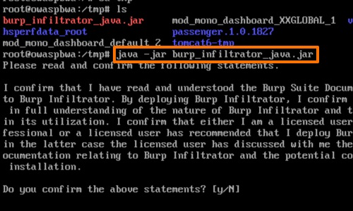
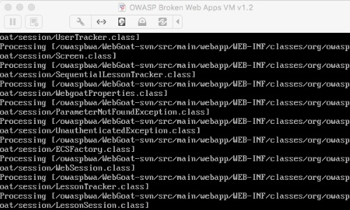
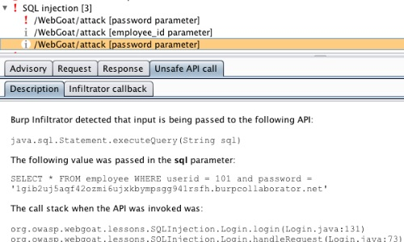

Burp Infiltrator
Burp Infiltratorは、Burp Scannerを使ったテストを推進するために、対象Webアプリケーションを器具化するツールです。潜在的に危険なAPIまでBurpの入力が達したかどうかをBurpが検出できるように、対象アプリケーションを変更します。
Burp Infiltratorは現在、次の言語で書かれたアプリケーションをサポートしています:
-
Java, Groovy, Scala, またはその他JVM言語 (JRE versions 1.4 - 1.8)
-
C#, VB, またはその他の.NET言語(.NETバージョン2.0から4.5)
重要な注意事項
-
Burp Infiltratorは本番システムや、可用性、パフォーマンス、正確な動作が必要なその他のシステムには使うべきではありません。Burp Infiltratorによるアプリケーションの変更によって、サービスの停止、パフォーマンスの低下、アプリケーションエラー、その他の問題を引き起こす可能性があります。
-
Burp Infiltratorはアプリケーションのバイトコードに不可逆な変更を行います。Burp Infiltratorによって行われた変更を戻すには、オリジナルの変更されていないソースコードから再デプロイする必要があります。
-
Burp Infiltratorによってアプリケーションの動作が変更されるため、ネットワーク経由でアプリケーションと通信できる誰かに、機密情報が漏洩する可能性があります。
-
これらの理由から、Burp Infiltratorの使用に適しているのは、(a)テスト目的で設計された、(b)漏洩する可能性のある情報に信頼できない人がアクセスできないシステム、のみです。
Burp Infiltratorの仕組み
Burp Infiltratorは次のように動作します:
-
Burpユーザは、Burpメニューを使って、適切なBurp InfiltratorのインストーラをBurp Suite Professionalからエクスポートします。
-
アプリケーション開発者または管理者は、アプリケーションのバイトコードがあるマシンでそれを実行し、Burp Infiltratorツールをインストールします。
-
Burp Infiltratorはアプリケーションのバイトコードにパッチを適用し、潜在的に危険なAPIを呼び出している箇所にインストルメンテーションフックを挿入します。
-
アプリケーションを通常通り起動すると、パッチが適用されたバイトコードが実行されます。
-
Burpユーザは通常の方法でアプリケーションのスキャンを実行します。
-
アプリケーションが潜在的に危険なAPIを呼び出すと、関連するAPIのパラメータをインストルメンテーションフックが検査します。Burp Collaboratorドメインを含むBurpのペイロードはそれぞれ一意になる構造で、フィンガープリントになっています。
-
インストルメンテーションフックは、検出したBurp Collaboratorドメインを、呼び出されたAPIの識別子を組み込むよう変更します。
-
インストルメンテーションフックは、変更されたBurp CollaboratorドメインのDNS参照を実行します。
-
必要に応じて、設定オプションによっては、変更後のBurp CollaboratorドメインにHTTP/Sリクエストを発行します。そこには、関連するすべてのパラメータやアプリケーションのコールスタックが含まれています。
-
スキャンペイロードによって発生したCollaboratorとの通信の詳細を取得するため、Burpは通常通りCollaboratorサーバをポーリングします。Burp Infiltratorが実行した通信の詳細が、Burpに返されます。
-
アプリケーション内で、入力に関連するアイテムが潜在的に危険なAPIまで達したことを、関連する脆弱性タイプの情報レベルの問題としてユーザに報告します。同じ問題の他の証跡(診断中の動作や他のColalborator通信)が見つかった場合、この証跡は1つの問題に集約されます。

Burp InfiltratorはBurp Collaboratorドメインを含むBurpペイロードを観察する動作をし、指定されたBurp Collaboratorサーバを経由して通信するので、Burp Infiltratorを使うには次を満たす必要があります:
-
スキャンを実行するBurpのインスタンスが、有効に動作しているBurp Collaboratorサーバを使うよう設定されており、対象アプリケーションとBurpがそのサーバと通信ができること。
-
少なくとも、いくつかのCollaboratorベースのペイロードを使うスキャンチェックが有効であること。理想的には、外部サービスと通信している場合は、スキャンチェックに含めておくべきです。Collaboratorベースのスキャンチェックをできるだけ多く行うと効果が最大になります。
Burp InfiltractorはプライベートなBurp Collaboratorサーバの使用をサポートしています。Burpが送信したペイロードに含まれるCollaboratorサーバの完全なドメイン名から、どのCollaboratorサーバと通信すべきかを認識します。しかし、ドメイン名を使うプライベートCollaboratorサーバだけをサポートし、IPアドレスを使うよう設定されたプライベートCollaboratorサーバはサポートしていません。
Burp Infiltratorのインストール
Burp Infiltratorを使用するには、次の手順で対象のアプリケーションにインストールする必要があります:
Burp Suite ProfessionalからBurp Infiltratorのインストーラをエクスポートします。BurpメニューからBurp Infiltratorを選択し、器具化したいアプリケーションのタイプを選択し、好きな場所にファイルを保存します。
注
Burp Infiltratorをインストールして実行する前に、現在アプリケーションが実行されていないことを確認してください。ディスク上のバイトコードが変更されない可能性があります。

Burp Infiltratorのインストーラを、アプリケーションをコンパイルしたバイトコードのあるマシンにコピーします。これは対象のアプリケーションサーバ上に既にあるかもしれませんし、別のマシン上でデプロイの準備中かもしれません。
パッチをあてる際、Burp Infiltratorはアプリケーションのバイトコードが置かれた場所を知る必要があります。最も簡単な方法は、アプリケーションのルートフォルダにInfiltratorインストーラを置き、そこを作業ディレクトリとして実行してください。または、インストール処理中にアプリケーションのバイトコードへのパスを指定できます。

Burp Infiltratorのインストールを実行するユーザが、アプリケーションのバイトコードを含むファイルとフォルダへの書き込み権限があるかを確認してください。
コマンドラインからBurp Infiltratorを実行します。たとえば、Javaアプリケーションの場合、java -jar burp_infiltrator_java.jar と入力します。
デフォルトで、Burp Infiltratorのインストーラは対話形式で実行され、インストール時に一連の質問をしてきます。または、非対話形式でも実行できます。

Burp Infiltratorはアプリケーションのバイトコードにパッチを適用し、潜在的に危険なAPIを呼び出している箇所にインストルメンテーションフックを挿入します。
パッチ適用処理が終了したら、変更されたバイトコードを使ってアプリケーションを通常の方法で起動します。

最後に、アプリケーションのスキャンを実行します。
Burp Infiltratorを使用すると、潜在的に安全でないAPIの呼び出し、関連するパラメータの完全な値、APIが呼び出されたときのアプリケーション呼び出しスタックを、Burp Scannerが報告できるようになります。

考慮事項
パッチ適用プロセスに関する次の考慮事項に注意してください:
-
アプリケーションの一部として実行されるコードが、複数の場所、または複数のマシン上にある場合に完全に網羅するためには、バイトコードがある場所それぞれに対してBurp Infiltratorを実行してください。
-
テスト対象アプリケーションの一部ではないバイトコードのファイルを含む場所で、Burp Infiltratorを実行しないでください。
-
アプリケーションのバイトコードへの変更は、署名されたコードコンポーネントの署名を壊すおそれがあります。署名されたコードコンポーネントでBurp Infiltratorを正常に使用するには、アプリケーションの署名検証を無効にする必要があります。
-
Burp Infiltratorはアプリケーションのバイトコードに不可逆な変更を行います。Burp Infiltratorによって行われた変更を戻すには、オリジナルの変更されていないソースコードから再デプロイする必要があります。
-
対象アプリケーションにBurp Infiltratorのパッチが既に適用されていて、新しいバージョンのBurp Infiltratorが利用可能になった場合、アップデートされたインストーラを通常通り単純に実行して、アプリケーションを再起動してください。
-
.NETアプリケーションにパッチを適用するために、Burp Infiltratorはバイトコードのアセンブラと逆アセンブラツールを使用します。これらは、(a) .NETフレームワークとWindows SDKツールそれぞれで配布されている
ilasmとildasm ツール、または(b)monoで配布されているilasmとmonodisツール、どちらかです。パッチ適用プロセス中に、アセンブラや逆アセンブラツールの場所を指定する必要があります。互換性を確保するため、テスト対象バイトコードの.NET framework のバージョンとアセンブリツールのバージョンを一致させなければならないことに注意してください。
-
Burp Infiltratorによるアセンブリの器具化が妨げられるため、.NETコードには
SupressIldasmAttribute属性のアノテーションを付与すべきではありません。
-
.NETアプリケーションにパッチを当てた後、Burp Infiltratorのインストーラ実行ファイルはアプリケーションがバイトコードを読み込むフォルダ(通常 "bin")に置いたままにしないでください。この場所にインストーラが残っている場合、デフォルトではアプリケーションの一部として.NETがインストーラを読み込み、警告や致命的なエラーがログに記録されるかもしれません。
非対話形式のインストール
Burp Infiltratorは非対話形式でインストールできます。これはさまざまなユースケースをサポートしています。たとえばCIパイプラインで、アプリケーションのビルドをステージングサーバにデプロイし、Burp Infiltratorをインストールし、Burp Scannerを使ってスキャンを実行できます。
Burp Infiltratorを非対話形式で実行するには、次の引数をコマンドラインに追加します:
--non-interactive
非対話モードでは、通常対話モードで要求されるすべての設定オプションにデフォルト値を使います。必要な場合は、追加のコマンドライン引数でこれらのデフォルト値を上書きできます。サポートしているすべてのオプションを表示するには、次のコマンドライン引数を使用してください:
--help
非対話形式でBurp Infiltratorをインストールする前に、上書きされずに使われる設定オプションのデフォルト値を、上記のオプションを使って確認し、要件に基づいて適切なオプションが確実に使われるようにすべきです。
注
Burp Infiltratorのインストーラを非対話モードで実行すると、対話モードで表示されるすべての警告と免責事項を読み、同意したと見なされます。
設定オプション
Burp Infiltratorのインストール中に次の設定オプションが対話形式で、または非対話形式インストールではコマンドラインオプションで、指定できます。
-
潜在的に危険なAPIに達したパラメータに関連するすべての値を報告するかどうか。
-
潜在的に危険なAPIに入力が達したとき、アプリケーションのコールスタックを報告するかどうか。
-
暗号化されていないHTTP経由でCollaboratorサーバとの通信を許可するかどうか。HTTPSを使うと、送信した情報の漏洩リスクを低減します。ただし、 器具化されたアプリケーションと、設定されたCollaboratorサーバで利用可能な技術によっては、暗号化されていない通信が必要になる場合があります。HTTPSが使われると、Burp Infiltratorは使用可能な最新のTLS暗号化を使用しようとします。一部の対象システム、特に古い技術が使われているシステムでは、使用可能な最新の暗号でも、適切な場所に位置する敵からの既知の攻撃に脆弱かもしれません。
-
指定したBurp Collaboratorサーバとのみ通信を許可するかどうか。Burp Scannerがスキャンしている間ペイロードには、使用すると設定したBurp Collaboratorサーバのサブドメインが含まれます。特定のCollaboratorサーバを使用したスキャン実行が分かっている場合、Burp Infiltratorがそのサーバとだけ通信を許可するよう設定できます。
-
Infiltratorがパッチをあてるファイルのパス。パッチは、常にサブディレクトリを再帰的にたどり適用されます。
注
設定オプションはパッチを適用している処理中に指定され、アプリケーションのバイトコードに行った変更に反映されています。パッチを適用された後にBurp Infiltratorの設定を変更するには、更新したオプションを使用してBurp Infiltratorのインストーラを再度実行し、アプリケーションを再起動する必要があります。